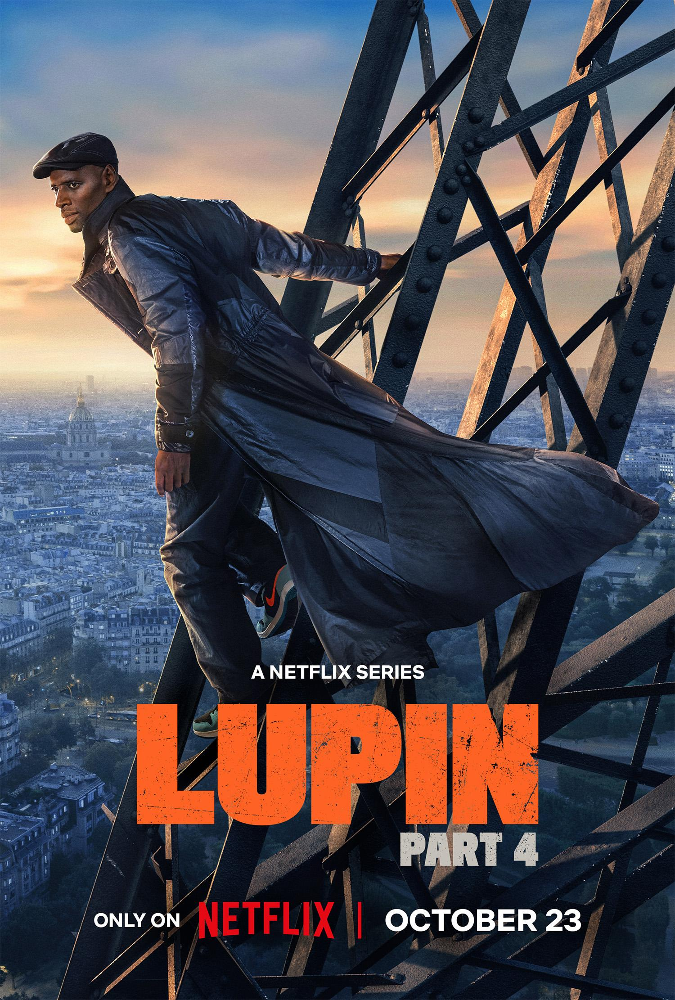
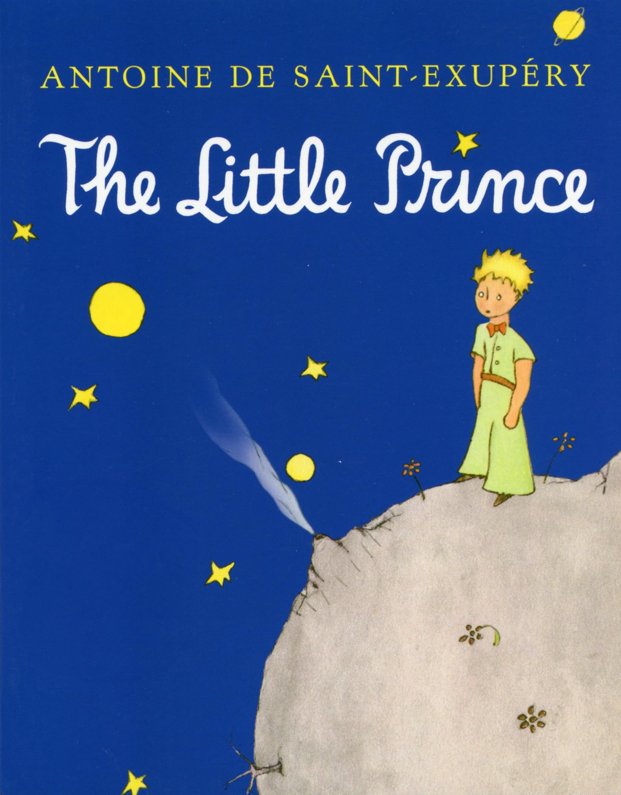
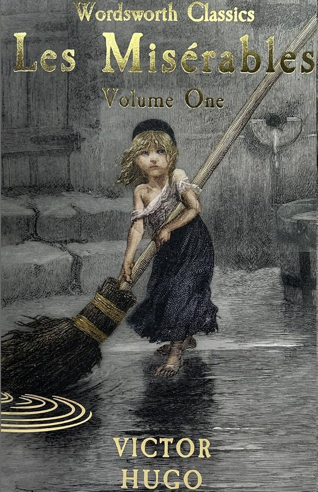
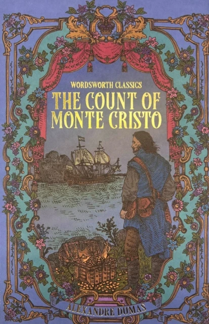
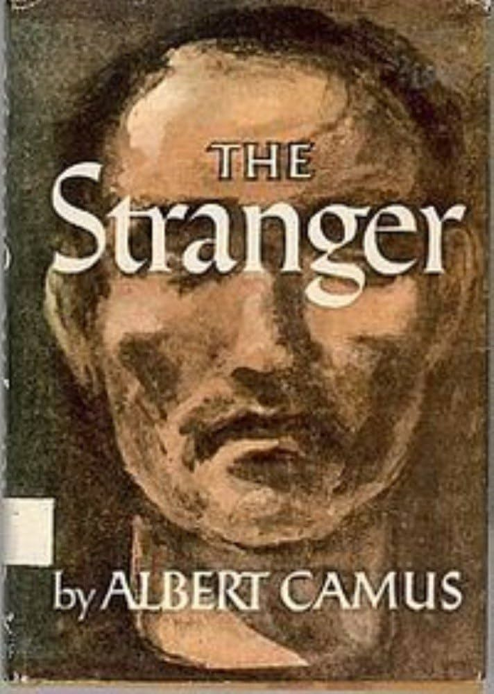

France holds a pioneering place in global media history, having given birth to modern cinema in 1895 with the Lumière brothers' first public film screenings in Paris. From the groundbreaking storytelling of the French New Wave to internationally acclaimed television series and influential journalism, French media blends artistic innovation with sharp cultural commentary. Today, its vibrant film festivals, streaming hits, and radio networks continue to captivate audiences both at home and around the world.
Workers Leaving The Lumiere Factory - Lumiere Brothers 1895




